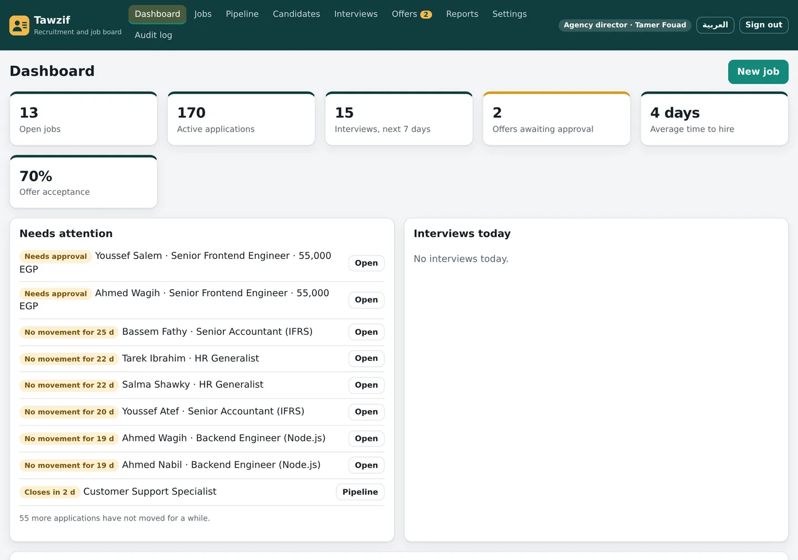
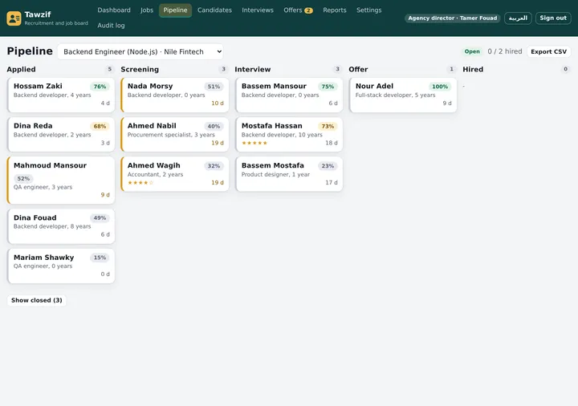
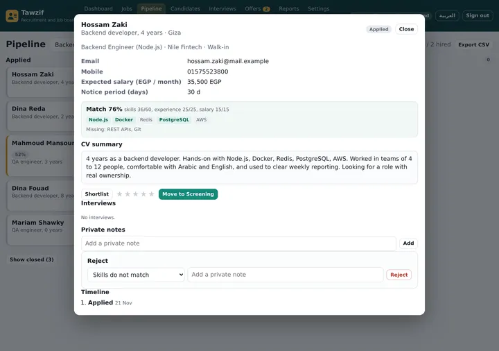
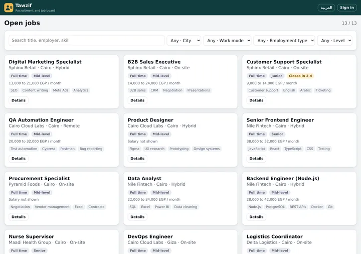
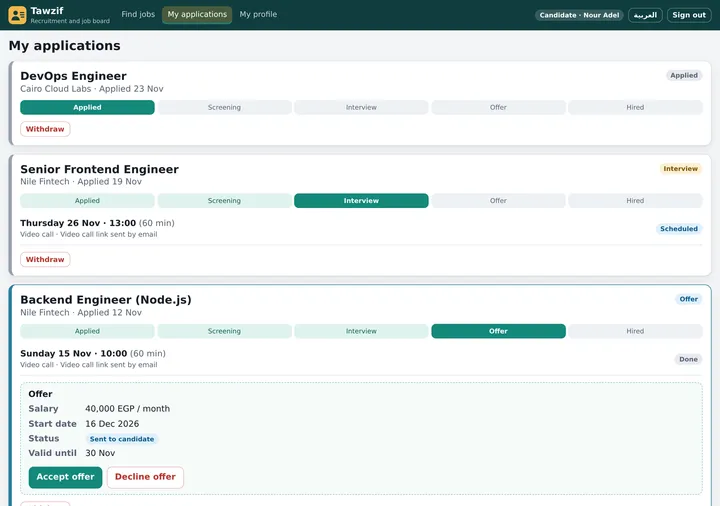
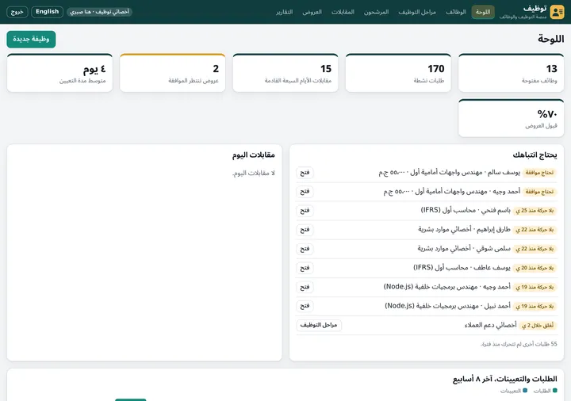
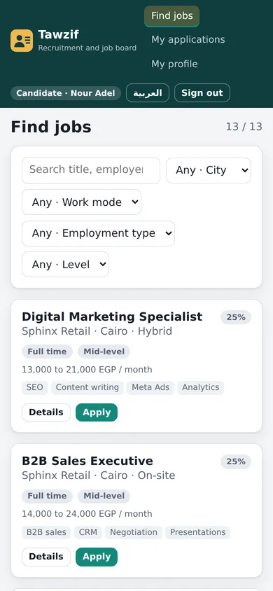

PORTFOLIO DEMO / BUILT / LIVE DEMO
Tawzif
From the first application to the signed offer, in one place.

ACTUAL BUILDTawzif · Agency dashboard. Fictional agency, employers and candidates.
The problem
A small recruitment agency tracks candidates in a spreadsheet and a shared inbox. Nobody can say which stage a person is in, interviews are booked by message and double booked, hiring managers either see everything or nothing, and an offer above the agreed salary goes out because nobody was asked.
What was built
A recruitment platform with four roles. The agency posts jobs for employers and publishes them to a public listing that visitors can search and filter by city, work mode, employment type and level, without signing in. Candidates apply from the listing or are added by a recruiter. Each application moves through applied, screening, interview, offer and hired, one step at a time, with a match score (skills, experience, salary fit), a star rating, private notes, a shortlist flag and a timeline. Interviews are booked Sunday to Thursday inside working hours, with notice and conflict checks for both the interviewer and the candidate, and the hiring manager records feedback. An offer needs a completed interview that is not all "no"; an offer above the job's salary band waits for the director's approval, expires after five days, and becomes a hire when the candidate accepts, which closes the job once every opening is filled. Reports show the funnel, time to hire, sources, stale applications and offer acceptance, with CSV export. The interface works in Arabic (right to left) and English, and on a phone.
What changes for the agency
Before. Stages live in people's heads. Interview slots collide. Managers see candidates' phone numbers and salary expectations they do not need. Over-budget offers are discovered afterwards.
After. The pipeline is one shared list with a stale-application warning. The server refuses a double booking, a weekend interview or an offer without feedback. Managers see only their own jobs and shortlisted candidates, without contact details. The director approves any offer above the band before the candidate sees it.
Why it matters to a recruiter
Candidates compare agencies by how fast and how fairly they are handled. A stalled application, a clashing interview or a retracted offer costs a hire. These are the situations the demo is built to show. They are not measured results from a real agency.
The approach
No framework and no build step: plain JavaScript pages, one serverless API function and one logic file that holds every rule (stages, scoring, interview slots, offers, auto-rejection when a job is filled, privacy per role, reports). The same file runs in the API, the browser and the test suites, so the rules the tests prove are the rules the site runs. Permissions are enforced on the server on every operation: candidates never receive notes or scores, managers never receive contact details or expected salary, the public listing carries no candidate data, and the audit log records each change with its actor.
The result
A live demo anyone can open. Sign in as the agency director (PIN 1111), recruiter (2222), hiring manager (3333) or candidate (4444); the PINs are on the sign-in screen, and the job listing is open without signing in. The sample agency has 17 jobs, 120 candidates, about 225 applications and about 67 interviews, including two offers waiting for approval and interviews waiting for feedback. Verification: 26 business-rule tests and 149 browser and API checks run against the live site, covering forged tokens, malformed and oversized bodies, every role's permissions, the data each role must not see, interview hour and double-booking rules, the offer approval flow, auto-rejection when a job fills, repeated requests, hostile text shown as plain text, spreadsheet-formula escaping in the CSV, Arabic RTL and phone layouts.
Evidence & production limits
One shared demo agency: everyone sees and changes the same data. State is kept in server memory only, so it resets about every six hours and whenever the server instance restarts. Sign-in is a PIN printed on the sign-in screen, so it must not hold real candidate data. The agency, employers, names, phones, emails and salaries are fictional.
Known gaps: no database, no real authentication, no email, SMS or calendar integration (an interview is recorded in the app only), no file upload (a CV is pasted text), and the match score is a simple rule-based number, not a prediction. Interview hours and limits are agency-wide settings, not per-employer calendars. Direction, scope and delivery: Nada Gamal.
Next chapter
Real accounts, a database, CV file upload and parsing, email and calendar invitations, employer logins for their own shortlists, and a configurable scoring model would be the next implementation steps.
Inside the build
Open any preview to see the full capture. Captures show demonstration content, not evidence of client use.





